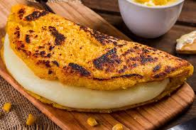

Home
Cachapas

Description
Cachapas are traditional venezuelan dish. They are like pancakes but made out of corn.
They are delicious and very easy to make. Traditionally they are topped with butter and
cheese and/or meat. They are loved by all ages.
Ingredients
- 2 cups of fresh corn kernels (or frozen, thawed)
- 1/4 cup of cornmeal (optional, for thickening)
- 1/4 cup of milk
- 1 tablespoon of sugar (optional, for sweetness)
- 1/2 teaspoon of salt
- 1 tablespoon of butter (for cooking)
- Queso de mano or mozzarella cheese (for filling)
Preparation
- In a blender, combine the corn, milk, sugar, and salt. Blend until you get a thick,
chunky batter. Add cornmeal if the mixture is too runny.
- Preheat a non-stick pan over medium heat and melt a bit of butter.
- Pour a ladle of the batter into the pan and spread it into a pancake shape.
- Cook for about 3–4 minutes on each side, or until golden brown and cooked through.
- Add slices of cheese on top and fold the cachapa in half so the cheese melts inside.
- Serve hot and enjoy!